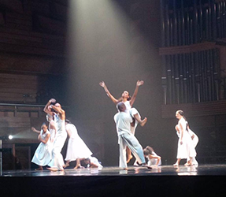
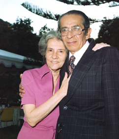

EL ULTIMO CANTO para Instrumentos
Latinoamericanos Emilio Mendoza
El Último Canto por Ballet Coreoarte, 1998

Coreoarte, Sala Simón Bolívar,
CNASM, Caracas, 17,18/06/2017
Realizada como grabación multicanal
por el autor en junio, 1984, por solicitud de Carlos Orta
para la residencia con la José Limón Dance Company, NY,
y luego adoptada por el Ballet Coreoarte,
Caracas, como parte de su repertorio permanente. 30 min.
El Último Canto
(fragmentos)
Coreoagrafía: Carlos Orta, Música: Emilio Mendoza,
(+ tocando la Bandola)
Ballet Coreoarte en su 25º Aniversario, Sala José Félix
Ribas, Teatro Teresa Carreño, Caracas, septiembre, 2009
El Último Canto, parte final, en video
Promo Coreoarte (0:26 - 2:46)
Coreoagrafía: Carlos Orta, Música: Emilio Mendoza,
2007
Canto consta de siete etapas entrelazadas que
describen el sentir y la esencia de un pueblo imaginario. Al
final de éstos, aparece la composición Etnocidio
que inicia la destrucción de una simbiosis cultural de una
comunidad por la agresión de otra cultura que se impone a la
fuerza.
I. Iniciación
3' 24"
Vaccines (Haiti), Sikus (Bolivia), Pito de pajarito de barro
(Mexico)
Sentido de prehistoria y tradición ancestral, la danza se genera
en posiciones aludiendo a petroglifos y figuras de insectos.
II. Extrañez 2' 34"
Marímbola (Ven), Quitiplás (Ven), Tortuga (Honduras)
Denota la presencia universal y peremne de la muerte como
impulso principal del desarrollo de una comunidad.
III. Espíritus 1' 03"
Flauta Xingú (Bra)
Aliento de todo lo invisible, insensible, que atrapa la fe y los
deseos de explicar la existencia y su muerte.
IV. Persistencia 1' 36"
Claves (Cub), Maraca Tsitsiíto (Ven)
Los ciclos repetidos de una sociedad, para sobrevivir,
insistiendo en el tiempo y permanecer.
V. El Mejor Momento 2' 58"
Bandolas Llaneras (Ven), Seis (Ven), Cuatro (Ven)
Las sensaciones de fiesta, júbilo y disfrute de la vida, las
sonrisas y el baile, el sexo y los placeres.
VI. Memorias 3' 01"
Bandola Llanera al estilo antiguo (Ven)
Los sentimientos de pérdida de seres queridos, de ausencia,
tristeza y añoranza, de irreversibilidad del tiempo y,
simultáneamente, la sensación de continuidad, enlace y orgullo
de familia, de ancestros, de historia y recuerdos.
VII. Etnocidio9' 06"
Orquesta de Instrumentos Latinoamericanos Etnocidio
aparecerá editada por Equinoccio, Ediciones de la Universidad
Simón Bolívar, Caracas.
Sobre Memorias
(originalmente "Memorias de una Esperanza" o en palabras de
Carlos Orta, "Sad Bandola")
Después de asistir en 23-10-1983 a un concierto de la ODILA en
la sala CANTV en Caracas el cual yo dirigí, Carlos Orta se me
acerca al final y me invitó a realizar la música para una
coreografía que él planificaba montar en el verano con la
compañía de danza “José Limón” de Nueva York en el Skidmore
College, Saratoga Springs, NY. Me trazó lo que él deseaba en
ambiente y en emociones, y además me describió a los
bailarines, sus tamaños, habilidades y puntos fuertes.
Acordamos encontrarnos directamente en EUA en junio, 1984,
llevando algunos bocetos grabados en Estudios Kandra, Caracas,
y partió de gira internacional. Lamentablemente el día antes
de mi salida, murió Benjamín, mi querido padre. Tuve un
concierto el mismo día tocando con Kei Yumei y el coro
de la UCV la Misa Criolla de Ariel Ramírez, fui al velorio y
entierro, y me dediqué toda la noche a grabar en un estudio
alquilado los sonidos que iba a utilizar para el encargo y
volé en la mañana siguiente a EUA.
Al llegar al fin al Skidmore College, visité el estudio de
grabación ya tarde en la noche, pero el ingeniero me dio el
micrófono, apretó el botón de "grabar" y me puse a tocar la
bandola. Después de calentar un poquito, tomando aire, salió Memorias
de una sola toma. Todo el imaginario de mi
vida y existencia con mi padre Benjamín se vertió en esta
pieza con la que compartí tres minutos de concentrada soledad
en el frío y oscuro estudio, al final de un trajín sin
precedentes. Está dedicada al recuerdo de mis ambos padres
porque eran inseparables, Sarita Guardia de Mendoza y Benjamín
Mendoza Sánchez, y a la esperanza de la vida que continua en
ellos a través de mí (ver foto más abajo en casa de los Recio,
Quinta El Cortijo, El Toronjil, San Antonio de los Altos).
La bandola
tradicionalmente se acostumbra oír dentro del lenguaje recio del
joropo llanero venezolano. No obstante, en esta pieza es
ejecutada por el autor haciendo una reflexión al estilo antiguo,
como una evocación a sus ancestros españoles y en remembranza de
su familia en la lejana bandurria ibérica y mozarábica. Podría
ser la primera composición en arte musical en Venezuela para
Bandola Llanera sola, pero no he investigado aún como para
afirmarlo. La bandola en esta pieza se mantiene
fuera de su contexto tradicional folklórico, lenta, triste en
remembranza.
Ejecuciones Memorias se interpretó como
coreografía autónoma en 1985 en la sala José Félix Ribas,
Caracas, bailada por Carlos Orta y tocada simultáneamente en
vivo por Mendoza dentro de una presentación del grupo de danza
Acción Colectiva. Justo antes de esta presentación, Orta bailó
por todo el perímetro de la tarima con mi
hija recién nacida Elisa Shaxie, llevándola en sus grandes manos
y brazos. Ver video de esa ejecución. Fue también grabada en la
USB en el video "Memorias" por la Unidad de Medios Audiovisuales
de la Universidad Simón Bolívar en 1985, Fernando Carrizales,
director, con la misma configuración de Orta y Mendoza tocando
en vivo.
Memorias fue una creación en movimiento y sonidos
íntimamente ligada al lenguaje dancístico de Carlos Orta, ya que
los dos artistas trabajaron juntos cruzando ideas mutuamente de
sus respectivas disciplinas. Es quizás el gran solo coreográfico
de Orta donde se entrelazan los pasos y giros más
característicos de su proposición expresiva. Sobresaltan rastros
de flamenco, de la danza de cámara, del folklore afrovenezolano
y del baile urbano afrolatino. Es una pieza cuya coherencia
estilística y conceptual están unidos y fielmente representados
por la danza, música y por la idea temporal y cultural que
comunica.
Referencias
Monasterio, Ruben. Cuerpos en el Espacio, Caracas:
Gramovén, Editorial Arte, 1986, p. 99.
Sassone, Helena y
Roland Streuli. La
Danza en Venezuela, Caracas: Armitano Editores, 1989, p.
224.

Distinciones
Composición creada por encargo de Carlos Orta para la
coreografía del mismo nombre con la José Limón Dance Company,
NY. Fue trabajada en conjunto con los bailarines y Orta en la
residencia que hizo el autor con la Compañía Limón en Skidmore
College, Saratoga, NY, en 1984.
Ejecutada por el mundo entero como parte del repertorio
de la Compañía José Limón Dance Company, NY, y por Francia,
Alemania, EUA y Venezuela por la Compañía Ballet Coreoarte,
Caracas.